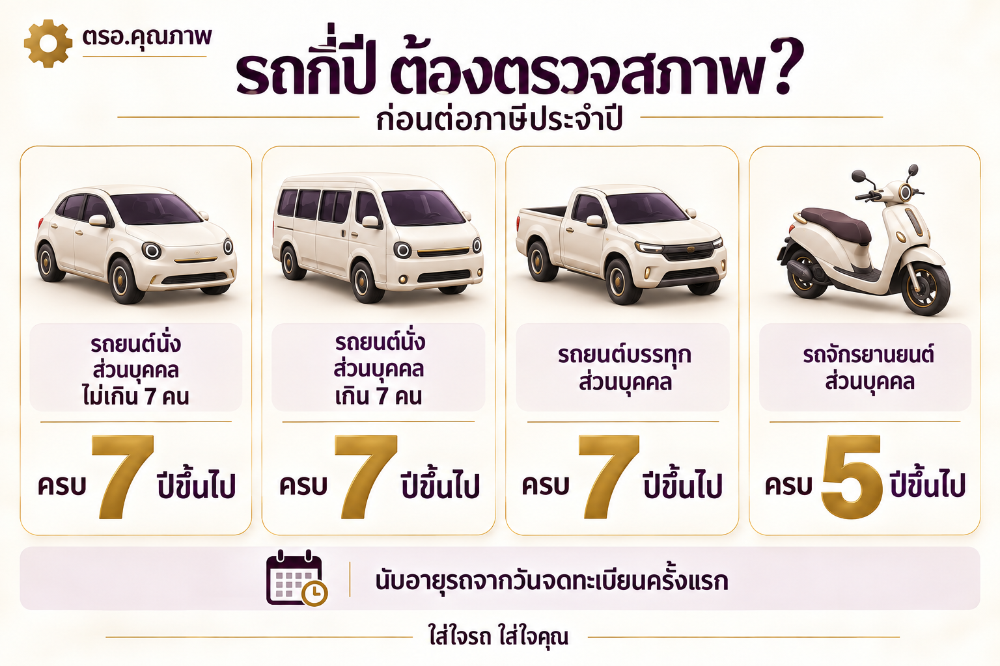
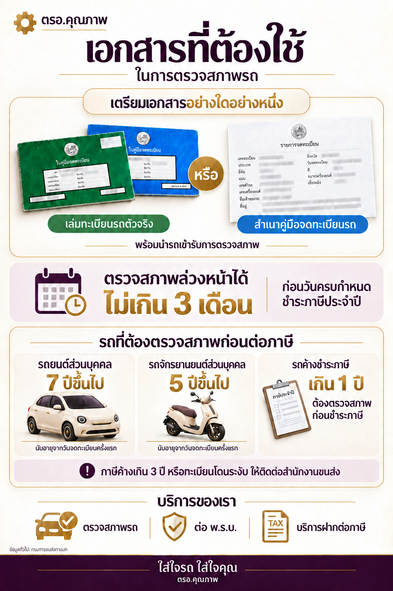

เข้ารับบริการ
นำรถและเล่มทะเบียนเข้ารับบริการที่ศูนย์ตรวจสภาพ
สถานตรวจสภาพรถเอกชน
ตรวจสภาพรถยนต์และรถจักรยานยนต์ พร้อมข้อมูลการเตรียมตัวและคำแนะนำที่เข้าใจง่าย

บริการของเรา
รถยนต์และรถจักรยานยนต์
ประกันภัยรถยนต์ประเภท 1, 2, 3
ค่าบริการ 100 บาท / คัน
โอน ย้าย เปลี่ยนสี เปลี่ยนเครื่องยนต์ ฯลฯ
ยินดีให้คำปรึกษาด้านงานทะเบียนค่ะ
ขั้นตอนรับบริการ
นำรถและเล่มทะเบียนเข้ารับบริการที่ศูนย์ตรวจสภาพ
ตรวจตามรายการที่เหมาะกับประเภทรถและการเข้ารับบริการ
รับผลตรวจที่เข้าใจง่าย พร้อมคำแนะนำเฉพาะรถของคุณ
เช็คเบื้องต้น
เลือกประเภทรถและวันจดทะเบียนครั้งแรกจากเล่มทะเบียน เพื่อเช็คอายุรถ ณ วันนี้
เป็นการเช็กเบื้องต้นสำหรับรถส่วนบุคคล ไม่ใช่ผลตรวจสภาพหรือการยืนยันสิทธิชำระภาษี หากต่อภาษีล่วงหน้าหรือเป็นรถประเภทอื่น โปรดสอบถามสาขา · ไม่บันทึกข้อมูลที่กรอก
อ่านเงื่อนไขกรมการขนส่งทางบก ↗
รถค้างภาษีเกิน 1 ปี ต้องผ่านการตรวจสภาพก่อนชำระภาษีประจำปี
เตรียมตัวก่อนมา

คำถามจากผู้ใช้รถ
เพียงนำเล่มทะเบียนรถและรถของคุณเข้ารับบริการ ทีมงานจะแนะนำเอกสารอื่น ๆ หากจำเป็น
ระยะเวลาขึ้นอยู่กับประเภทรถ สภาพรถ และจำนวนรถที่เข้ารับบริการ สามารถสอบถามเจ้าหน้าที่เมื่อมาถึงได้ครับ
เราจะอธิบายจุดที่ควรแก้ไขอย่างชัดเจน เพื่อให้คุณนำรถไปดูแลและกลับมาตรวจซ้ำได้อย่างมั่นใจ
สาขาที่ให้บริการ
สะดวกสาขาไหน ติดต่อสาขาใกล้บ้านได้เลยค่ะ
จันทร์–เสาร์ 08:00–17:00 น.
ปิดทุกวันอาทิตย์
นอกเวลาทำการ กรุณาโทรสอบถาม
ขอใช้ตำแหน่งเมื่อคุณกดค้นหาเท่านั้น คำนวณในเครื่องโดยไม่บันทึกตำแหน่ง
ตรงข้ามวัดเติมรัก ต.บางคูรัด
02-1029615โทรเลย เปิดแผนที่สาขา